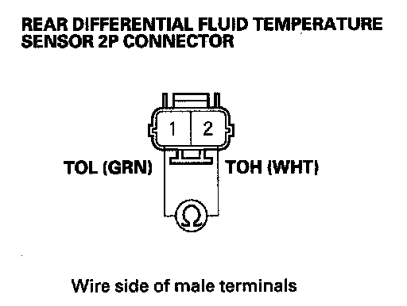

DTC 43-1
DTC 43-1: Differential Fluid Temperature Sensor Circuit MalfunctionNOTE: Before you troubleshoot, review the general troubleshooting information.
1. Turn the ignition switch ON (II).
2. Check for DTCs with the HDS.
Is DTC 42-1 or 42-2 indicated?
YES - Go to the indicated DTC's troubleshooting.
NO - Go to step 3.
3. Clear the DTC with the HDS.
4. Start the engine.
5. Let the engine idle 1 minutes.
6. Test-drive the vehicle for 5 minute.
7. Check for DTCs with the HDS.
Is DTC 43-1 indicated?
YES - Go to step 8.
NO - Intermittent failure, the system is OK at this time.
8. Turn the ignition switch OFF.
9. Disconnect SH-AWD control unit connector A (20P).
10. Disconnect the rear differential fluid temperature sensor 2P connector.
11. Check for continuity between rear differential fluid temperature sensor 2P connector terminals No. 1 and No. 2.

Is there continuity?
YES - Repair short in the wire between rear differential fluid temperature sensor 2P connector terminals No. 1 and No. 2.
NO - Go to step 12.
12. Reconnect all connectors.
13. Update the SH-AWD control unit if it does not have the latest software or substitute a known-good SH-AWD control unit.
14. Start the engine.
15. Let the engine idle 1.
16. Check for DTCs with the HDS.
Is DTC 43-1 indicated?
YES - Replace the rear differential fluid temperature sensor.
NO - Replace the original SH-AWD control unit.